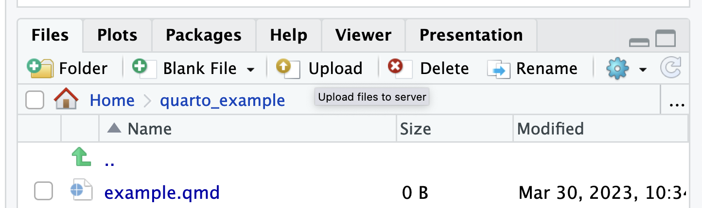

rm -rf merge-conflict-example
git clone https://github.com/jameshowison/merge-conflict-example.git
cd merge-conflict-example
git log -1 --skip 1 --remerge-diff
## Cloning into 'merge-conflict-example'...
## commit 50911dc2232965238790ad8ca3fdcabe56b41639
## Merge: 57c1c6c 99b328f
## Author: pablo-carbajo1 <99198265+pablo-carbajo1@users.noreply.github.com>
## Date: Thu Mar 2 18:06:57 2023 -0600
##
## Merge branch 'main' into patch-1
##
## diff --git a/animals.txt b/animals.txt
## remerge CONFLICT (content): Merge conflict in animals.txt
## index f9970b6..f07b36e 100644
## --- a/animals.txt
## +++ b/animals.txt
## @@ -1,8 +1,5 @@
## -<<<<<<< 57c1c6c (Update animals.txt)
## lion Contributor B
## -=======
## lion contributor A
## ->>>>>>> 99b328f (Merge pull request #4 from lisahyuniko/patch-1)
## tiger
## leopard
## turtleAppendix A — Skills faq
A.1 git issues
A.1.1 Set my name and email
git wants to add your name and email to commits. These are distinct from your github account (remember git can be used independently of an online service or with online services other than github).
If you are seeing messages that end like this:
You can suppress this message by setting them explicitly. Run the
following command and follow the instructions in your editor to edit
your configuration file:
git config --global --edit
After doing this, you may fix the identity used for this commit with:
git commit --amend --reset-authorThen you can run these commands to set a username and email. Note that these can be anything, they aren’t a login or checked against anything, they are just metadata attached to your commits. Nonetheless having them make sense for your identity makes sense when sharing code publically. They can easily be a made up identifier (pseudonym/handle/accountname).
git config --global user.name "John Doe"
git config --global user.email johndoe@example.comA.1.2 Login to GitHub
On the commandline we have to use the username/PAT combination. The password that works to log into GitHub on the web will not work.
If you see this message:
remote: No anonymous write access.
fatal: Authentication failed for <repo_url>Then you need to log in, but first reset the credential cache:
git config --global credential.helper 'cache --timeout=10000000'Then repeat the command that failed (hit the up-arrow twice usually brings it up).
When you see this prompt, use your GitHub username (not the email address)
Username for 'https://github.com': <your_github_username> When you see this prompt, even though it says “password” you must use your PAT token:
Password for 'https://<your_github_username>@github.com': On windows you may have to use the right-click context menu to paste into the terminal.
A.1.3 Password pop-up repeats too often
The username/password pop-up can come up too often. Especially with GitHub requiring a PAT (and not the same password used on the website) this can be a hassle, since the PAT is not configurable and has to be copy/pasted.
Rstudio is generating that pop-up, but the frequency is controlled by a gitconfig variable. The default without configuration is 15m so if we don’t run a git command for 15m it expires the cache and pops up again. We can make it show up less with:
git config --global credential.helper 'cache --timeout=10000000'That means that the cache won’t expire for 10,000,000 seconds (which is 16 weeks).
Thanks to https://happygitwithr.com/https-pat.html#store-credentials-through-organic-git-use and the Rstudio community forums for helping me with that https://community.rstudio.com/t/git-user-pass-pop-ups-when-using-git-in-terminal-window/161213
A.1.4 Shortcut to find GitHub URL
A short cut to find the URL is git remote -v
~/workspace/i320d-testing2024$ git remote -v
origin https://github.com/jameshowison/i320d-testing2024.git (fetch)
origin https://github.com/jameshowison/i320d-testing2024.git (push)And then copy the URL (with or without the .git at the end). On windows you may need to use the right-click context menu for copy and paste in a terminal.
A.1.5 git commit throws me into a weird mode
If you type git commit just on its own rather than git commit -m "Some message" you will see something like this:
# Please enter the commit message for your changes. Lines starting
# with '#' will be ignored, and an empty message aborts the commit.
#
# On branch master
# Your branch is up to date with 'origin/master'.git needs a commit message. When you don’t provide one it throws you into a text editor, expecting you to type a small novel.
The editor that you go into by default is the vi or vim editor. It can be confusing because it has multiple modes (ie typing doesn’t always just produce text).
The best option is to:
- Hit
esctwice: Esc Esc
- Type
:q!and hit Enter - Redo your commit using `git commit -m “Some message”
See https://stackoverflow.com/questions/11828270/how-do-i-exit-vim
The option below does not work in Rstudio because Rstudio captures the
You can also configure git to use another editor: https://stackoverflow.com/questions/2596805/how-do-i-make-git-use-the-editor-of-my-choice-for-editing-commit-messages
For example, the nano editor is easier to use. You can set that run running
git config --global core.editor "nano"In nano we can type a commit message as usual. The bottom of the screen shows commands. Nano uses the ^ symbol to represent the
Ctrl + O
Then:
Ctrl + X
A.2 I accidentally made my home folder a git repo
If you are in your home folder but git status doesn’t give a “fatal error” then you’ve accidentially made your home folder into a git repository (probably by running git init in that folder).
In this case we need to undo this. We can’t delete our home folder, because it has everything else inside it. We have to somehow tell the computer that the home folder should not be a git repo. Happily, then only thing that makes it a git repo is that it has a .git folder inside it. You can confirm by running:
ls -lahThe -a flag to ls makes it show all files and folders, even the hidden ones that start with a dot.
To fix this we could just delete the .git folder but we might lose data that way (if we had already added work to that repo). So safest thing is to make a new folder inside our home folder, and then move the .git there.
mkdir backup_home_git
mv ./.git ./backup_home_gitNow you could cd backup_home_git and use that folder as a git repo. But probably you are about to clone from github (in which case a new folder will be created) or you are about to use git init to create a new local repo (in which case you should create a folder first, cd into it, then run git init.
A.3 Vizualizing git trees (aka git viz)
In this course we are using a command that I usually call “git viz” for short:
git log --oneline --abbrev-commit --all --graph --decorate --colorInstructions for creating the convenient alias git viz are in Git basic workflow.
This produces reasonably readable graphs (especially for the teaching repos used in this course).
They look like this:
jlh5498@educcomp04:~/github_repos/i320_test3,,\n git viz
* d8ab2c1 (HEAD -> main, origin/main, origin/HEAD) Merge pull request #1 from jameshowison/new-feature
|\
| * ffb601d (origin/new-feature, new-feature) added extra
|/
* f256ee7 Added line to README
* 093fb0c Initial commitOr as an image (with coloring as on Edupod Rstudio):

You can read a little more about how to read these graphs here https://stackoverflow.com/questions/22313343/git-graph-what-do-the-lines-and-asteriks-denote
Long story short:
- The asterisk characters (
*) show a single commit - The lines formed with characters like (
| \ /) help us follow which branches a commit was on. - The words in parens show branch names, and can include the names of remotes (e.g.,
origin/new-featuremeans thenew-featurebranch on theoriginremote)
It is a long command, so you can either keep it handy in a pastebin (I use Typinator) or you can register it as a command alias for git itself:
git config --global alias.viz 'log --oneline --abbrev-commit --all --graph --decorate --color'So then you can just type:
git vizA.4 Seeing a merge conflict using git log
In one assignment students have to submit a repo showing a resolved merge conflict when accepting a PR. This raised the question of whether I could see this looking at the repo. Student questions helped me figure that our, leading me to https://stackoverflow.com/questions/15277708/how-do-you-see-show-a-git-merge-conflict-resolution-that-was-done-given-a-mer which highlighted this as an issue in presenting merge conflicts for review. The most recent answer, led me to discover a new feature in git
git log --remerge-diffThis enables one to see the files with the <<<<<< type conflict markers shown.
A.5 Gathering the code as though the PR had been accepted
Sometimes it is useful to be able to work with the code that would result if the PR was accepted, but without actually accepting the PR. Sometimes this is called “previewing the PR”. It is useful when working with PRs from others, and can also be useful when working on our own branches, but where we don’t want to merge that branch to main (which is a difficult operation to undo).
On GitHub (and other online repositories like Gitlab or BitBucket) we can do this because the pull requests are added to the online repository, somewhat like branches. We can access these using the git fetch command pointing to the pull part of the repository.
git fetch origin pull/123/head:pr-123
git checkout pr-123This obtains the code as though the PR had been accepted and then makes a new local branch that we can work with. Notice, though, that thje new local branch is not the same branch that the PR is for … it is a local copy. Therefore we would not push that new local branch back up to GitHub, preferring to work with the PR itself (and here is documentation about how to allow others to edit your PRs).
A.6 Removing something from history entirely
The purpose of git is to retain all of your history, so that you can go back to any point in development and recover (as well as experiment while not breaking the mainline of development). Simultaneously when we are working in the open that means that anyone can view any file that was ever in a repository. With that in mind it is not too surprising that if you accidentally add something to git and then push it to github you can have trouble putting “the genie back in the bottle.”
Let’s say that we create a repo and add a README, then add a SPECIAL_SECRET file with the password “swordfish” in it. Note that I use git add * below which is a very common way to accidentally add a problematic file, try to get into the habit of adding files one by one.
$ cd practice_history_edit/
git init
Initialized empty Git repository in /Users/howison/Documents/UTexas/Courses/PeerProduction/practice_history_edit/.git/
vi README
git status
On branch main
No commits yet
Untracked files:
(use "git add <file>..." to include in what will be committed)
README
nothing added to commit but untracked files present (use "git add" to track)
git add README
git commit -m "now we have a README"
[main (root-commit) f4878b0] now we have a README
1 file changed, 1 insertion(+)
create mode 100644 README
vi SPECIAL_SECRET
git add *
git commit -m "whoops added secret"
[main 018f6b5] whoops added secret
1 file changed, 1 insertion(+)
create mode 100644 SPECIAL_SECRET
git viz
* 018f6b5 (HEAD -> main) whoops added secret
* f4878b0 now we have a READMENow I’ll go ahead and make one more edit to README
vi README
git add READMEgit commit -m "README edit 2"[main 4d51f91] README edit 2
1 file changed, 1 insertion(+)
git viz
* 4d51f91 (HEAD -> main) README edit 2
* 018f6b5 whoops added secret
* f4878b0 now we have a README
ls
README SPECIAL_SECRET
cat SPECIAL_SECRET
swordfishOk, so we realize that the password file got into git and we swing into action and delete it from git.
git rm SPECIAL_SECRET
rm 'SPECIAL_SECRET'
git commit -m "phew removed it, or did we"
[main ff229ba] phew removed it, or did we
1 file changed, 1 deletion(-)
delete mode 100644 SPECIAL_SECRET
ls
READMESo now the file is not there. Or rather it is not in our working directory. The problem is that it is still inside out .git folder and we can get it out easily.
git checkout HEAD~1
Note: checking out 'HEAD~1'.
You are in 'detached HEAD' state. You can look around, make experimental
changes and commit them, and you can discard any commits you make in this
state without impacting any branches by performing another checkout.
If you want to create a new branch to retain commits you create, you may
do so (now or later) by using -b with the checkout command again. Example:
git checkout -b <new-branch-name>
HEAD is now at 4d51f91... README edit 2
lsREADME SPECIAL_SECRET
cat SPECIAL_SECRET
swordfishHere I just used git checkout HEAD~1 which goes one commit back in time, to before we deleted the SPECIAL_SECRET file. Even if we were far ahead, or over on other branches etc, I could always get back by asking to see the code just after the commit that added the file git checkout 018f6b5 (btw, to get out of DETACHED HEAD state just checkout the branch again, we’re working on main so it would be git checkout main).
So using git rm removes a file from the working directories but it doesn’t remove it from the git history. And that’s a sensible thing, usually you want to be able to go back in time. But sometimes you want to remove something from the history entirely. You can do that using the approaches outlined by Github here: Removing sensitive data from a repository
The process is a bit complex (as it should be) but simplified with the bfg tool, as described at the link above. First you have to download the tool (which requires Java to run) then follow the instructions step by step.
Keep in mind that if you had pushed this sensitive info to a repo on github and others had then forked or cloned it then that info is not going to be deleted from the clones, so passwords should definitely be changed and you should ask everyone to delete forks/clones and start again.
There are a set of approaches to avoid uploading sensitive data. A good starting point is discipline around using .gitignore which will prevent adding files that should not be added. Another approach is to become familiar with using environment variables to hold secrets. This is an evolving area, so ask others in your organization how they handle secrets (usually access credentials) when using git. One recent approach (specific to GitHub is https://docs.github.com/en/actions/security-guides/encrypted-secrets)
B How to add an image using quarto on edupod
Quarto is like html in that the main .qmd document references separate image files, rather than incorporates them inside the main file itself. You have to place the images separetely (and also git add the image files separately).
On Edupod getting figures into your quarto document takes two steps:
- Upload the file to the server

- Use the Visual mode in the quarto file editor to insert the picture.

Using the Render button will confirm that your images are found.
Then don’t forget to git add the image files as well. Run a git status to check which files are included.
B.1 Good git messages
Whenever you “git commit” (or using the GitHub UI), it can be tempting to quickly write an uninformative message like “Update numbers.py” or “fix test”. This is bad because
It makes things harder for your co-contributors as they can’t easily tell what your commits are doing in a PR.
It makes it harder for other (or even you!) to find a particular commit where you introduced a bug that was discovered months later.
It makes it harder to read the history of the repository (for everyone), which can be a pain for maintenance or figuring out how to make a particular change.
In general you should strive to make your commit header messages (the first line of your commit) explain what was changed. This is what is shown in “git log”, “git viz”, and in many UIs on GitHub. Think of it like a chapter title for your commit. Here are some good examples:
Fix failing phone number validation test
Update crypto-rand dependency from v0.8.0 to v0.9.0
Add drop-down UI element on main page to select language
The best messages are somewhat detailed because they explain why something was changed. You want to say enough that if someone else (or you!) are looking at the commit weeks later, you’re able to figure out what the idea of the commit is. Here is a classic piece on writing great commit messages that goes into more detail (definitely read and remember this if you plan to go into software). We aren’t expecting you to do all of this for the class; it’s just a good thing to practice. (We do expect you to make an effort to write informative first lines though)